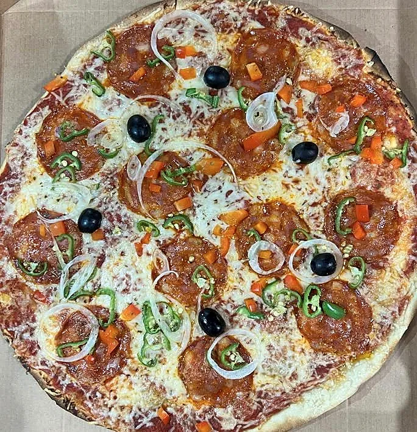
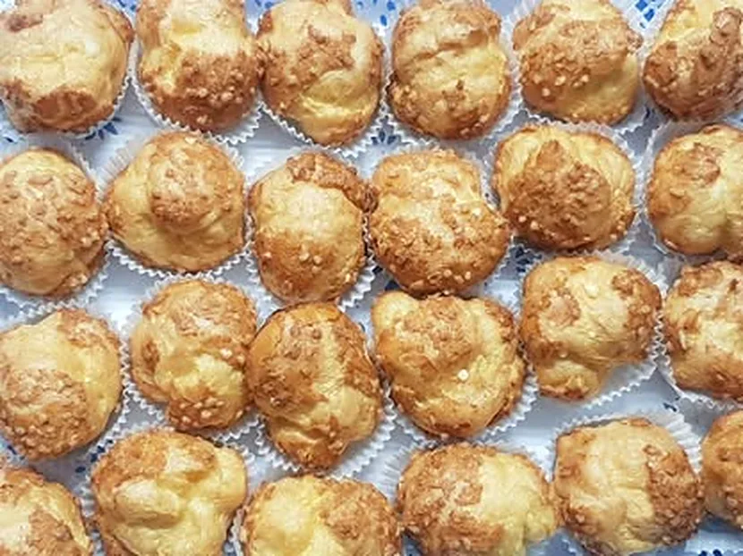
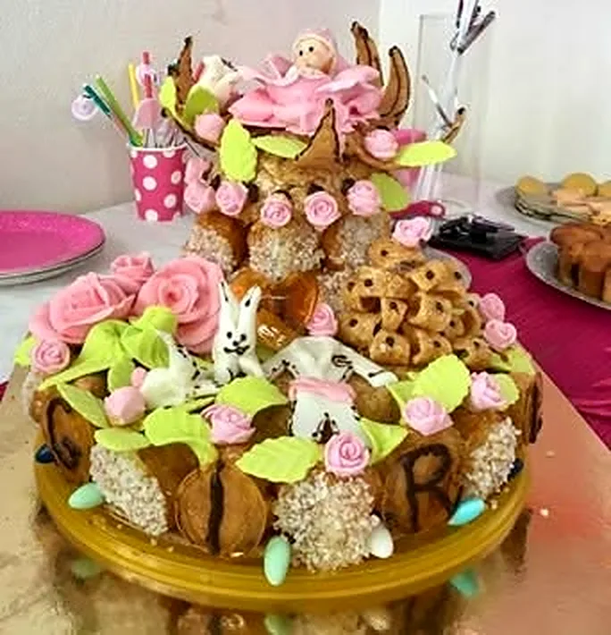
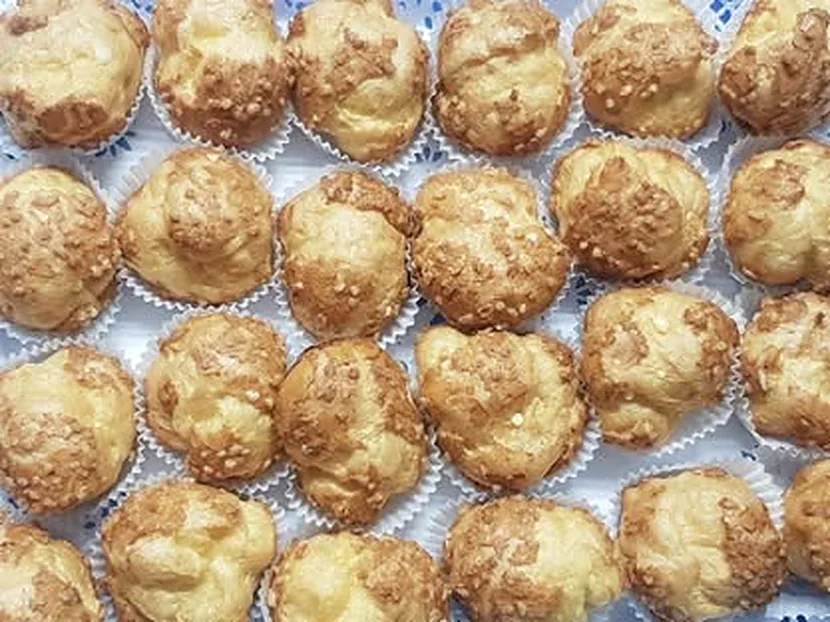
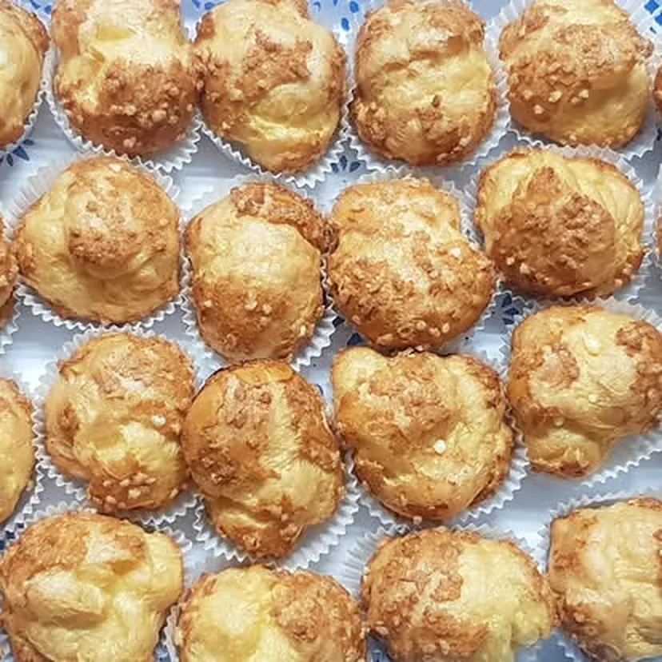
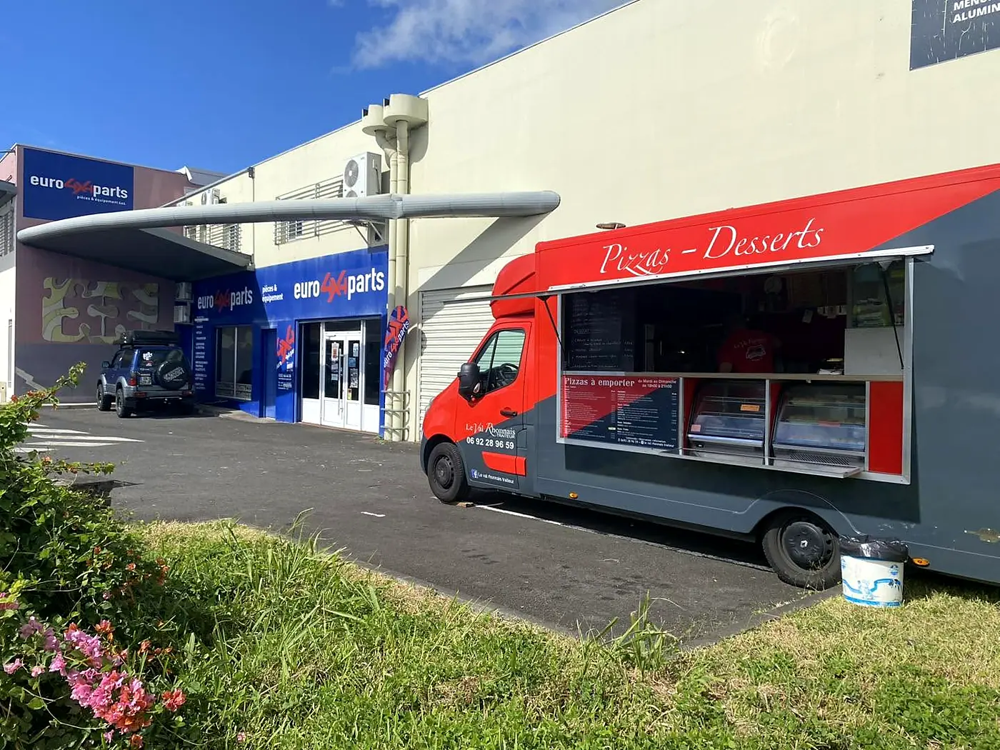
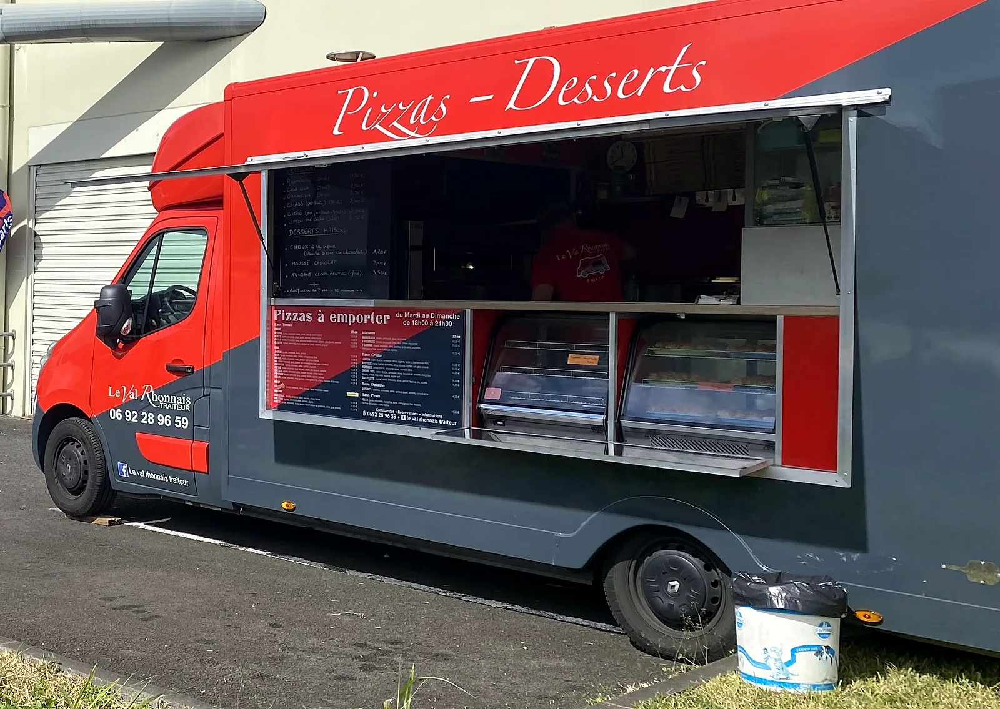
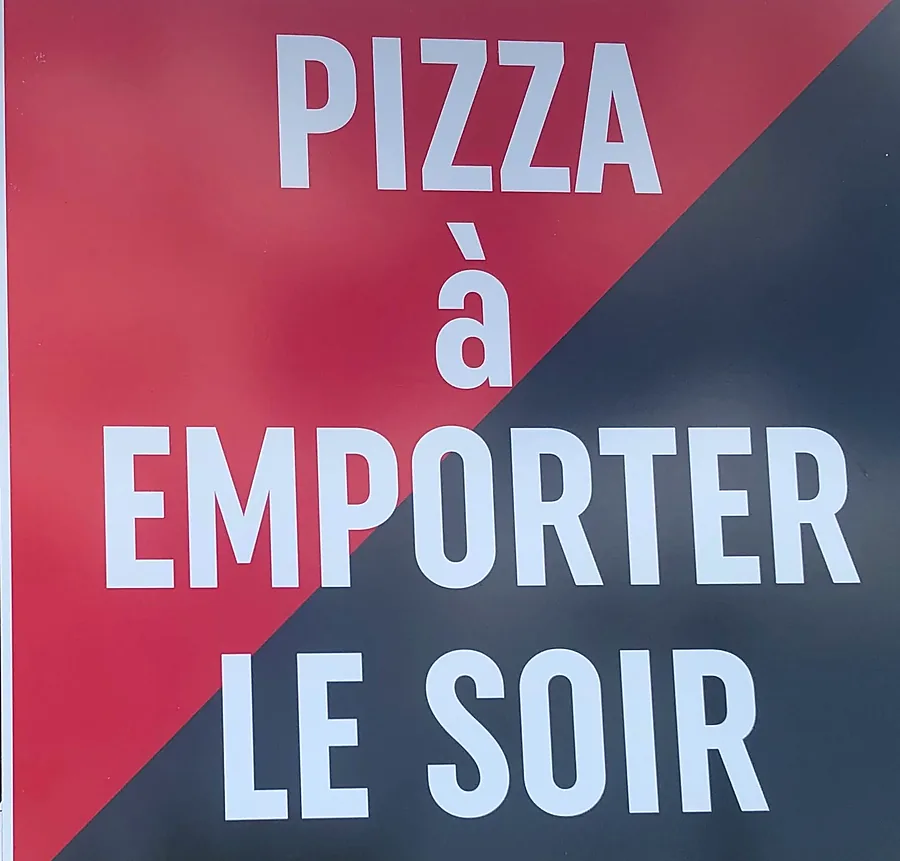
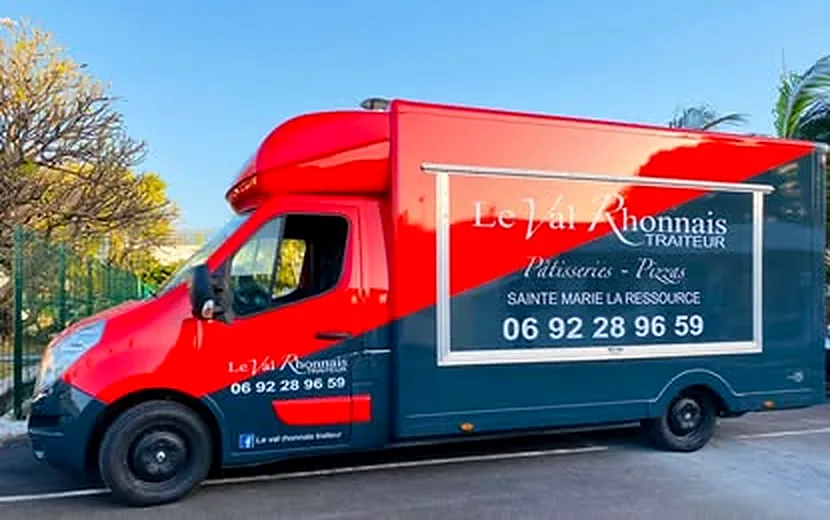
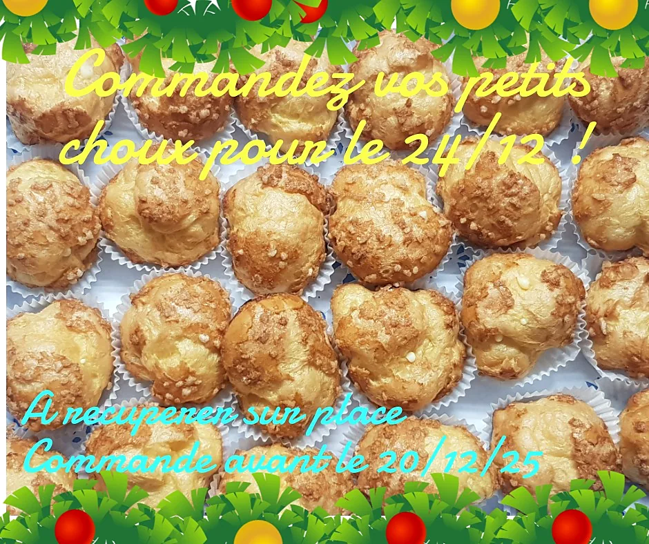

Les pizzas
À emporter, le midi comme le soir selon l'étape du camion. Le plus simple : appeler pour la préparer à l'avance.
Camion pizza, fabrication artisanale de tartes et de quiches, pâtissier. De La Ressource à La Mare, à Sainte-Marie.
Le Val Rhonnais traiteur, c'est un camion pizza aux couleurs rouge et ardoise, une signature « Pizzas – Desserts », et un savoir-faire de pâtissier : les annonces du camion listent les desserts maison du jour, à côté des pizzas.
Côté traiteur, la maison fabrique aussi ses quiches, ses tartes et ses choux à la crème.

À emporter, le midi comme le soir selon l'étape du camion. Le plus simple : appeler pour la préparer à l'avance.

Petits choux à la crème, petits choux à la vanille bleue, fondant choco-menthe glacé.

Choux, fondants et créations de fête : la page présente la maison comme « pâtissier » autant que camion pizza.
À chaque étape, la page annonce les douceurs du jour. Parmi celles déjà proposées :
#dessertmaison #petitchoux — les mots-clés de la maison.


Le camion se déplace : chaque étape est annoncée sur la page Facebook et sur Instagram. Les dernières en date :
Sainte-Marie, 5 impasse Neptune — en face d'Asia Store, devant Shop n'Wash.
« Ce samedi soir, le camion Pizza sera à la Ressource ! » — commandes au 0692 28 96 59.
« Retrouvez-nous ce soir au Marché de Nuit ! » — sur le Barachois, devant la croix de Lorraine, à Saint-Denis.
Soirée Roller dance à la Cité des Arts, marché nocturne de Beauséjour : le camion suit aussi les soirées de l'île.

Le camion à La Mare, Sainte-Marie — photo publiée par Le Val Rhonnais traiteur.



Faites glisser pour voir la suite →

L'an dernier, la maison proposait déjà ses petits choux en commande pour Noël, à récupérer sur place :
« Pensez à commander vos petits choux pour Noel ! »— Le Val Rhonnais traiteur, publication du 17 décembre 2025
Pour les fêtes de cette année, un petit message suffit pour demander ce qui est prévu : petits choux, tartes ou quiches pour la table du réveillon.